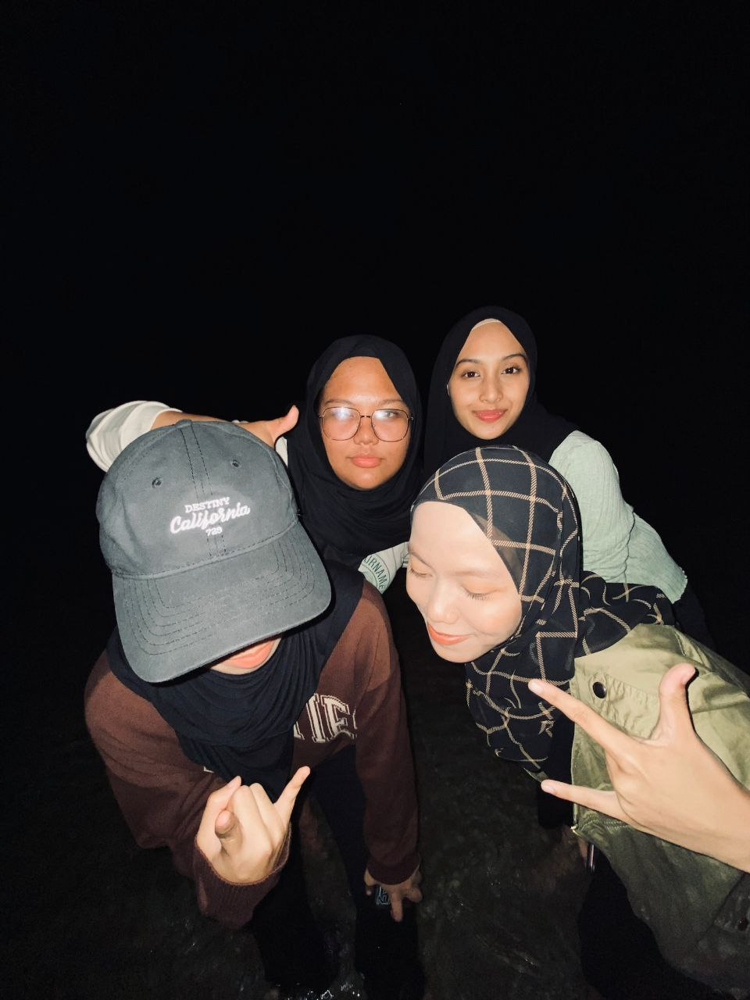

Hi and Assalamualaikum, welcome to our blog, peeps!
I'm Fatin Nurhazirah Zamzury, you guys can call me either Fatin or Hazirah
as long as it's still my name, that's not a problem for me. Here I would love to share a little bit
about myself, even though there is actually no uniqueness about me. But, I love myself,
and I'm happy to share my humble biography. I'm 20 and was born in Kuala Terengganu,
but currently I'm staying at Johor to follow my family that has lived there since I was little.
Besides, I'm the third of four siblings and I'm the only daughter in the family.
Some people said that only daughter are lucky, for me, yes, because I got everything without
mind to share it with my other siblings. I don't know how to describe myself; what can I say
that I'm fragile and complicated. That is all the information about myselfthat i able to share.
Without further ado, enjoy the blogs guys!
This is me and my foundation's classmates
PLACES
PERPUSTAKAAN TUN SRI LANANG
Perpustakaan Tun Sri Lanang or well-known as PTSL is very famous places
among "bookworm" students. This library has a huge longitude and latitude that provide
many facilities such as cyber center, a study room, and more that are suitable
for students to have a group discussion or review their studies. Besides, they
also provide many study references, and it quite easy to search all the
reference sources because they are already arranged according to their genre
and type codes. And to make it easier, the library already has a system that can help
users find their reading sources.
HOT MEAL BAR UKM
The Hot Meal Bar restaurant is the most hectic and crowded place in UKM,
especially during the peak hours. This restaurant serves Chinese cuisine,
and the most popular meal there is beef mee tarik and dumplings. The price
is quite affordable for the portion they serve. I highly recommend This
place to those who are currently craving the Chinese cuisine.
HUTAN SIMPAN UKM
Hutan Simpan UKM is one of the best place in UKM for those who are currently
in UKM and wanting to hiking, go and try it. We already go up and reach the peak and then
go down less than 10 minutes. That's mean it not really high to achieve the peak.
A LIFE IN UKM
Fatin's share:
Quick share my experience through this first semester:
My first week in UKM was a bit chaotic at first because there were
too many things I should settle on at once while the class had already
started, but everything went smoothly and fun after I managed to make friends
with two first persons when I was starting my journey in UKM. Those
two lucky people are my own blog mates, Yasmin and Vinoo. We enjoyed our
first week of learning in UKM, even though it was still done online.

I love spending my degree life with my classmates...aaaaanddd we love doing
a random things like quick shopping after class, overnight trip to PD:)))
THANK YOU FOR YOUR PASSIONATE READING THIS TILL END...